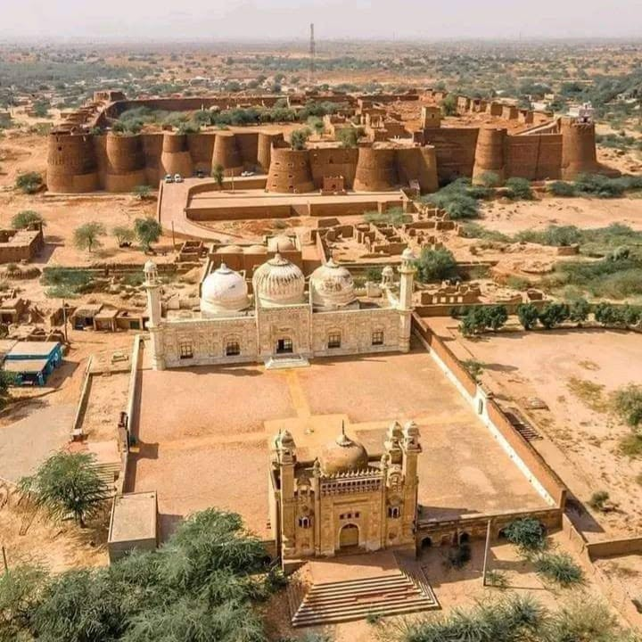

Divisional headquarters · former Bahawalpur State · largest district by land in Punjab · phone code 062

| Name | Type | Population | Area (km²) | Urban |
|---|---|---|---|---|
| Ahmadpur East | Tehsil | 1,307,578 | 1,738 | 26.67% |
| Bahawalpur City | Tehsil | 815,202 | 1,490 | 100% |
| Bahawalpur Saddar | Tehsil | 675,950 | 745 | 22.33% |
| Hasilpur | Tehsil | 508,415 | 1,490 | 38.64% |
| Khairpur Tamewali | Tehsil | 290,582 | 993 | 16.27% |
| Yazman | Tehsil | 687,237 | 18,374 | 8.84% |
Bahawalpur is both a city of palaces and the largest district by area in Punjab. The Abbasi Nawabs ruled Bahawalpur State from the eighteenth century until the state acceded to Pakistan. In 1955 the state was merged into the province; the present district is the core that kept the old capital. Sadiqgarh Palace, Noor Mahal and Darbar Mahal still stand in the city. The district around them is not a palace garden. About two-thirds of the land is Cholistan — sand, tobas (desert ponds), and the Derawar fort line — while the northern strip is Sutlej canal command, mango orchards and cotton. Official site: bahawalpur.punjab.gov.pk.
The district covers 24,830 km². That is nearly three times Bahawalnagar next door and larger than many whole divisions elsewhere in Pakistan. Density is only about 173 people per km² because Yazman tehsil alone holds about 18,374 km² of desert. The city and Saddar tehsils are crowded. The desert tehsil is not. Readers who only see Noor Mahal miss most of the land.
Pakistan Bureau of Statistics 2023: 4,284,964 people in 673,437 households. Men 2,174,995, women 2,109,500, transgender 469. Urban 1,619,321 (about 38 percent). Rural 2,665,643. Sex ratio about 103 men per 100 women. Children under ten: 1,231,401 (about 29 percent of the surveyed population). Age 0–14 is about 1.74 million.
Literacy at age ten and above is 53.35 percent — 59.40 percent for men and 47.09 percent for women. City tehsil literacy is about 72 percent. Ahmadpur East is about 40 percent. The gap between those two rows is the education story of the district. Earlier censuses: 2.43 million in 1998, 3.67 million in 2017.
The old single “Bahawalpur tehsil” is now split. Bahawalpur City (about 1,490 km², 815,202 people, literacy about 71.7 percent, 36 union councils) is the built-up capital: cantonment, railway station, airport, university wards and the palace quarter.
Bahawalpur Saddar (745 km², 675,950 people, literacy about 52.6 percent) is the densest tehsil. It is the ring of canal villages and peri-urban union councils around the city, not a second downtown.
Ahmadpur East (Ahmedpur Sharqia) is the most populous tehsil: 1,738 km², 1,307,578 people, literacy about 39.7 percent, 31 union councils. Uch Sharif — the old river town of tiled tombs — sits in this belt. Dera Nawab Sahib is the other historic name on the same road.
Hasilpur — 1,490 km², 508,415 people, literacy about 59.6 percent, 14 union councils. A cotton and grain mandi on the Bahawalnagar side of the district.
Khairpur Tamewali — 993 km², 290,582 people, literacy about 45.8 percent, 8 union councils. Smallest population. Mostly rural Saraiki villages on the Sutlej command.
Yazman — 18,374 km², 687,237 people, density only about 37 per km², literacy about 53.6 percent, 18 union councils. This is the Cholistan tehsil. Derawar Fort, desert settlements and Lal Suhanra National Park’s dry side belong here more than to the city bazaar. A jeep track in Yazman is not the same public-service problem as a packed ward in City tehsil.
Union-council lists published with the district total about 107.
The 2023 mother-tongue table is not the Punjabi-majority sheet used for Bahawalnagar. Saraiki is first: about 2.89 million speakers. Punjabi is next, about 1.03 million. Urdu about 233,000. Smaller rows include Hindko, Pashto and Mewati. Riasti (the old state dialect) is heard in the city and is counted inside the Saraiki / Punjabi columns rather than as its own census label. English is a campus and office language, not a household majority.
Islamia University of Bahawalpur (IUB) is the main public university for Bahawalpur Division, with faculties spread across the city and affiliated colleges in the tehsils. Government Sadiq College Women University is the women’s university that grew out of the old Sadiq College. Quaid-e-Azam Medical College trains doctors for the division. Government Sadiq Egerton College and a long list of graduate and postgraduate colleges sit in the city; degree colleges also run in Ahmadpur East, Hasilpur, Yazman and Khairpur Tamewali. Students from Bahawalnagar and parts of Rahim Yar Khan still come here for medicine and many master’s programmes. The literacy gap in Ahmadpur East and Khairpur Tamewali is not solved by the palace-side campuses unless teachers actually post there.
Bahawal Victoria Hospital (BVH), with Quaid-e-Azam Medical College, is the teaching centre for southern Punjab in this division. Civil Hospital Bahawalpur and BINO (nuclear oncology, near the Noor Mahal side) add city capacity. Punjab health statistics list a cluster of hospitals and more than two thousand beds in Bahawalpur City tehsil, with smaller hospitals in Ahmadpur East, Hasilpur, Khairpur Tamewali and Yazman. THQ hospitals serve those four outer tehsils. A maternity case from a Cholistan settlement still faces hours of sand track before it reaches Yazman, then the city. That distance is ordinary administration, not a rare headline.
Cholistan covers most of Yazman and reaches into the southern union councils. Derawar Fort is the brick landmark on the old Hakra / desert route. Lal Suhanra National Park, east of the city, is a biosphere reserve of irrigated forest, wetland and desert edge. The Cholistan Jeep Rally is a seasonal public event on that ground. None of those sites replace canal water or a girls’ high school in Ahmadpur East.
In the city the visitor names are Noor Mahal, Darbar Mahal, Sadiqgarh, the central library, the zoo and Abbasi Mosque. Uch Sharif’s tomb cluster is older than the Nawabi palaces and is a separate historical layer. Blue tile work, embroidery and pottery are the crafts usually listed with the state; cotton ginning and mango packing are the work most households actually meet.
On the Sutlej command the rotation is wheat, cotton, sugarcane and mango. Dates appear on the western and riverine edge. Livestock — cattle, sheep, goats — is the desert household economy. Rainfall is low (often cited around 150–200 mm a year). Summer temperatures commonly pass 45°C. Tail-end canal shortage and drinking water in Cholistan settlements are the standing public problems. The airport and the main railway put the city on the Karachi–Lahore line; they do not irrigate Yazman.
Bahawalpur city, Model Town and the palace quarter, Ahmadpur East, Dera Nawab Sahib, Uch Sharif, Hasilpur, Khairpur Tamewali, Yazman, Derawar, Lal Suhanra.
Sources: Pakistan Bureau of Statistics 2023 (households, tehsil area and population, literacy, mother tongue, age); Government of Punjab, District Bahawalpur; Punjab health institution tables; Islamia University and QAMC public listings. Checked September 2026.